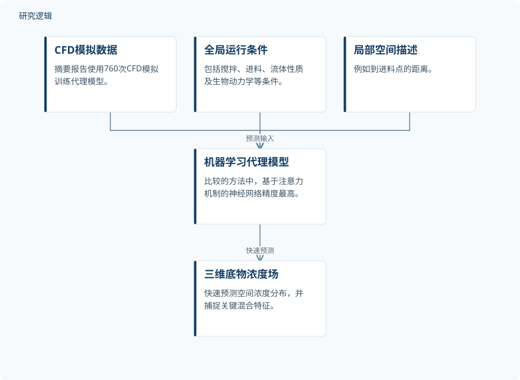

摘要解读
机器学习代理模型实现工业生物反应器三维底物梯度快速预测
Machine-learning surrogates enable rapid prediction of 3-D substrate gradients in industrial bioreactors
解读更新 2026-10-16 15:24 · 依据公开摘要整理，未核验全文细节
工业搅拌罐生物反应器中的底物浓度如何随空间变化，关系到反应器设计与运行控制。这项研究用机器学习代理模型逼近高成本流体计算，探索能否在保留关键混合特征的同时，快速预测三维底物浓度场。
文章目录
底物空间梯度预测，难在计算成本
高保真计算流体力学（CFD）能够提供工业搅拌罐生物反应器内细致的底物梯度预测，但计算开销限制了其常规应用。研究关注的不是单一平均浓度，而是完整的三维浓度场：既要描述空间差异，又希望让预测速度适合更频繁的工况探索。
从CFD模拟学习工况与空间位置的关系
作者利用760次CFD模拟训练代理模型，将全局运行条件与局部空间描述共同作为预测依据。前者包括搅拌速度、进料策略、进料点位置、流体密度与黏度、液位、生物动力学参数及生物量浓度；后者例如到进料点的距离。模型的目标输出是完整的三维底物浓度场。
摘要提到研究比较了多种方法，其中包括基于注意力机制的神经网络。其方法思路是从模拟数据中学习运行条件、局部位置与浓度之间的映射；摘要没有展开网络结构、训练流程或各类方法的具体配置。
依据摘要整理的三维浓度场预测示意


概括CFD模拟训练代理模型，以及全局条件、局部空间描述用于预测的关系；不是论文原图，不表示未报告的网络结构。
下载 SVG图示关系说明
实线表示相邻阶段的信息流，虚线表示跨阶段联系或反馈。
CFD模拟数据 → 机器学习代理模型：用于训练；全局运行条件 → 机器学习代理模型：预测输入；局部空间描述 → 机器学习代理模型：预测输入；机器学习代理模型 → 三维底物浓度场：快速预测
注意力模型兼顾预测精度与毫秒级推理
在摘要所述的方法比较中，基于注意力机制的神经网络取得最高精度，测试集R²约为0.91，并能够捕捉关键混合特征。其推理达到毫秒量级，相比CFD的加速最高可达百万倍。这里的加速针对预测环节，不能据此推断生成训练数据和训练模型的全部成本。
作者据此认为，数据驱动模型能够有效耦合流体动力学与生物动力学，实现快速、准确的空间预测，并为运行空间探索提供支持。实时优化、数字孪生以及反应器设计与控制是摘要提出的应用价值，不宜直接解读为这些应用均已完成现场验证。
测试表现尚需结合数据划分与验证范围理解
仅凭摘要，无法判断760次模拟覆盖的反应器构型、工况范围，以及训练集和测试集如何划分；也无法确定比较方法的完整名单、精度指标的具体统计口径和加速测量条件。对未见工况的泛化、真实反应器数据验证及闭环控制表现，摘要均未提供足够信息，需进一步阅读论文核实，不能据此认定论文没有开展相关工作。
阅读启发：区分快速场预测与运维闭环
阅读启发：面向AI智能运维，这项工作的直接启示是用代理模型降低空间状态预测的计算门槛，而不是已经实现故障诊断或预测维护。进一步阅读时，值得关注模型在哪些工况内可靠、局部浓度偏差如何评估，以及快速预测如何接入数字孪生；这些问题有助于界定其工程适用边界。
以上为本站阅读启发与建议，不是论文已验证的结论。